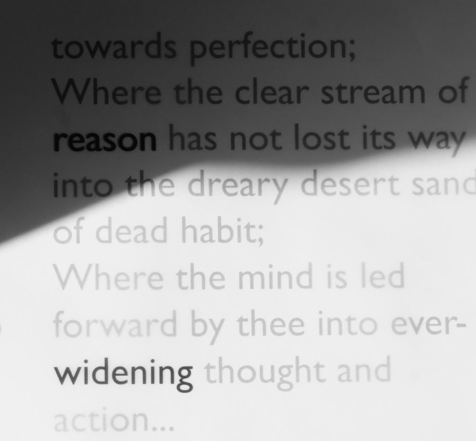
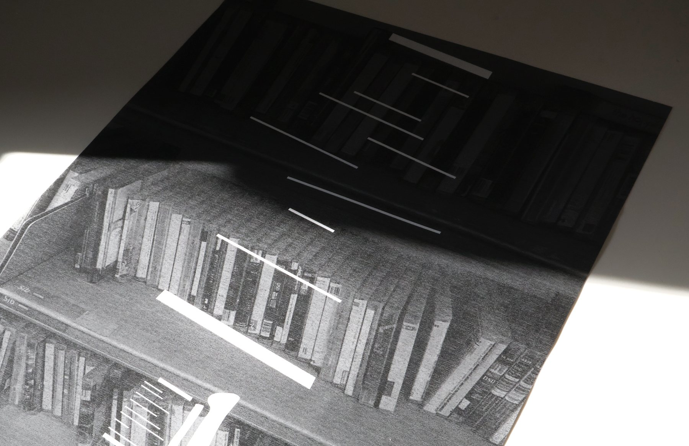

Bilingual Reading Circle: poems that travel
雙語讀書會- Next event date and time
- Starts on Saturday, 26 September 2026 at 11am
Ends on Saturday, 26 September 2026 at 12.30pm
雙語閱讀 · 文化節目 · 季節活動
Classes, reading rooms and festivals, written in both languages. Everything is free; some events ask for a place to be booked in advance.
The programme follows two calendars: the school year in London and the festivals of the Chinese year — Lunar New Year, Qingming, Dragon Boat, Mid-Autumn and Winter Solstice.


Regular sessions run every week; the readings, workshops and listening rooms are part of the seasonal programme and change with the calendar.
The seasonal programme is the part of the redesign that happens over time. Each season takes one idea — light, water, harvest, stillness — and reads it through both cultures.
Four books the librarians of Charing Cross Library are reading this month. Ask at the desk and we will find you a copy — in English, in Chinese, or in both.
Joe Simpson · recommended by Laurence Foe, Reading and Literacy Librarian
書Isabel Waidner · recommended by Helen Bailey, Library Officer
書Mary Jean Chan · poems, recommended by Helen Bailey, Library Officer
詩Patrick Leigh Fermor · recommended by Laurence Foe, Reading and Literacy Librarian
書Reading group
Second Wednesday, monthly
“The library lends language as much as it lends books.”
Everything happens at 4 Charing Cross Road, two minutes from Chinatown. The building opens thirty minutes before the first event of the day.